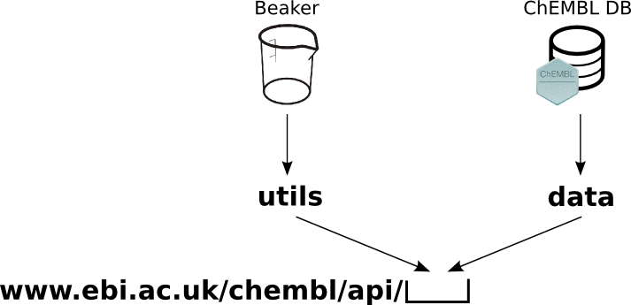
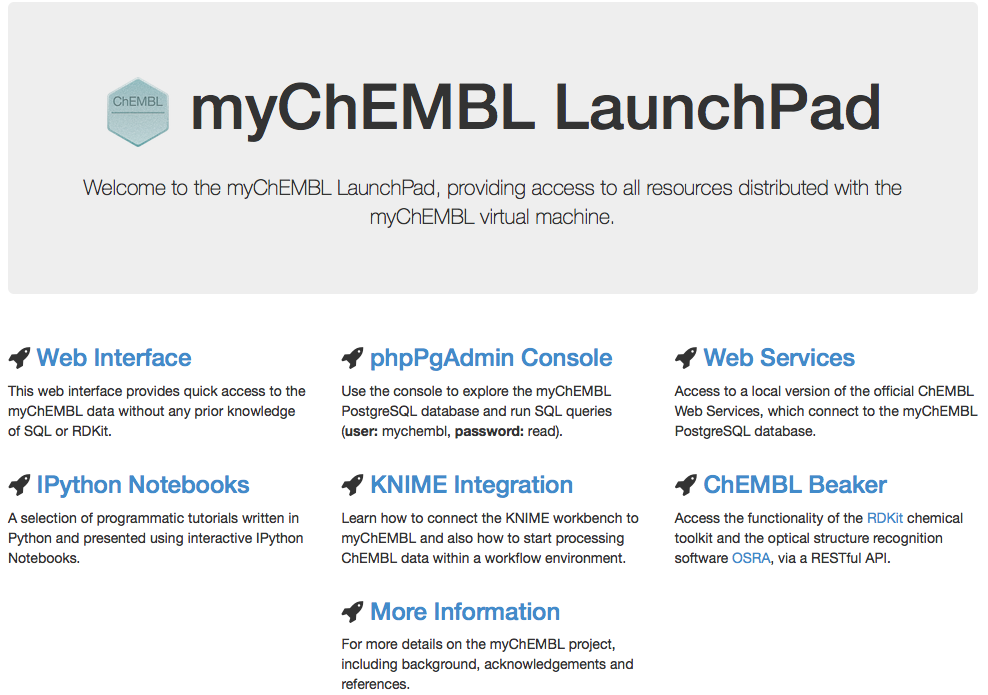

Want drugs?
Use Python
Michał Nowotka ◊
George Papadatos
Mark Davies
ChEMBL Group
EMBL-EBI
What's ChEMBL?
Our team develops and manages ChEMBL, a database of quantitative small molecule bioactivity data focussed in the area of drug discovery.
The majority of the ChEMBL data is derived by manual abstraction and curation from the primary scientific literature.
ChEMBL Database
- Current version: 20
- 62 Tables
- Distinct compounds: 1,463,270
- Targets: 10,774
- Activities: 13,520,737
- Publications: 59,610
ChEMBL Django ORM Model
- No more raw SQL in Python code
- DB agnostic interface
- Less sensitive to schema changes
ChEMBL Web Services
Utilities and data

Technologies used

IPython notebooks
- Collection of notebooks
- Explain how to leverage the data
- Various difficulty levels
- Open sourced
IPython notebooks examples
- Retrieving data (SQL, ORM, REST, Python client)
- Plotting (D3.js via mpld3, matplotlib)
- RDKit tutorial
- Machine learning (sklearn, scipy, numpy)
- Data mining
- Exploring patent data from SureChEMBL
myChEMBL
- ChEMBL DB (on Postgres)
- RDKit DB Cartridge (substructure/similarity)
- Chemical toolkits (RDKit, Indigo)
- Chemistry software (OSRA)
- Notebooks
- Web Services
- Web Interface
- All preconfigured and loaded into a single VM
Fetching myCHEMBL
vagrant init chembl/mychembl_20_ubuntu
vagrant up
vagrant init chembl/mychembl_20_centos
vagrant up
myChEMBL launchpad

myChEMBL
- Distribution channels:
- FTP
- Vagrant
- Operating systems:
- CentOS
- Ubuntu
- Virtualization techniques:
- Virtual Box
- QEMU/KML
- Docker Containers
Other applications
- ADME Sarfari (A tool for predicting and comparing cross-species ADME targets)
- Curation Interface (helps extracting data)
- NoSQL approaches (neo4j, MongoDB)
Thank you!
Questions?